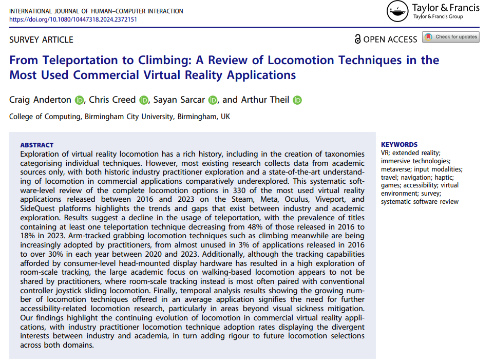
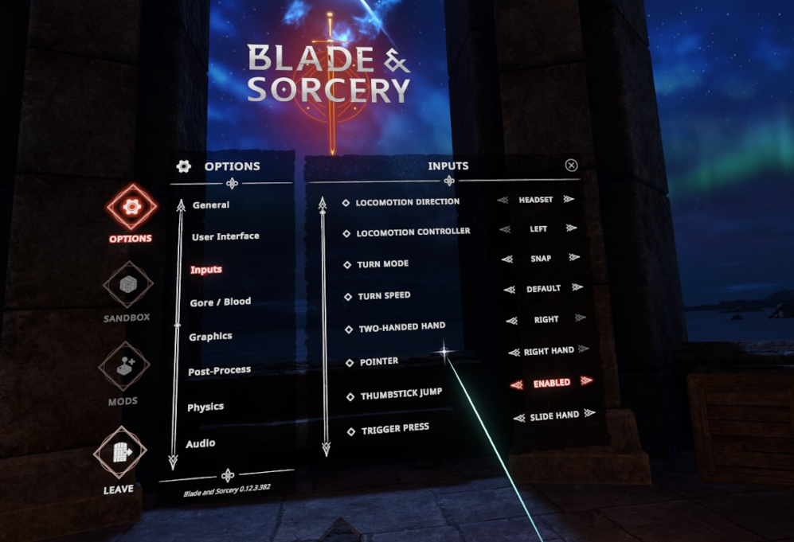
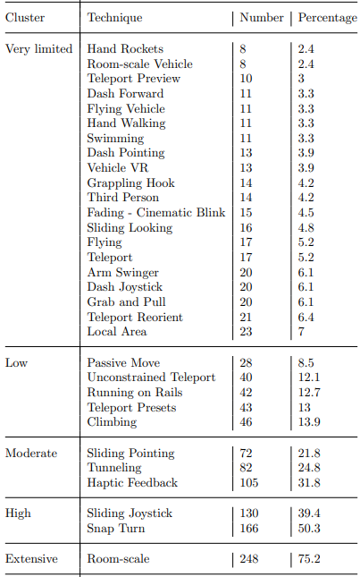
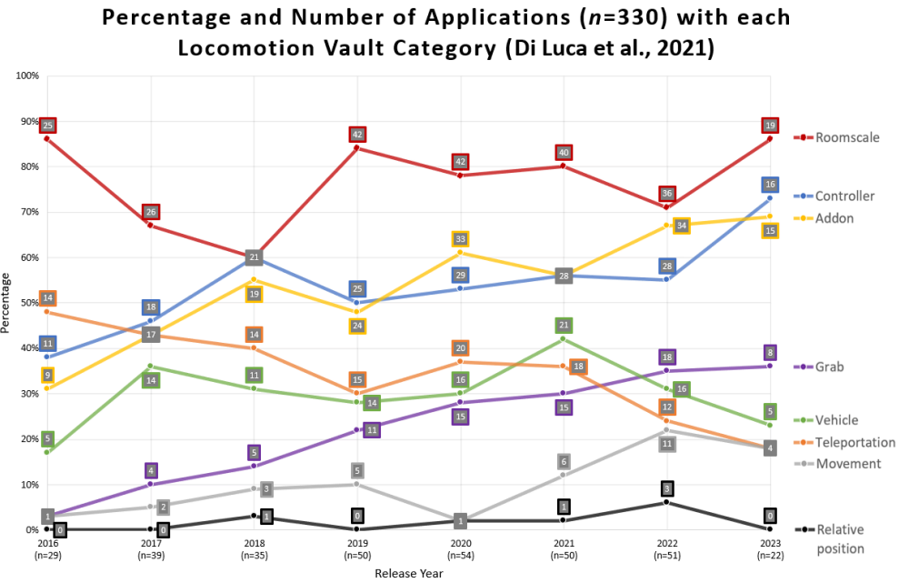
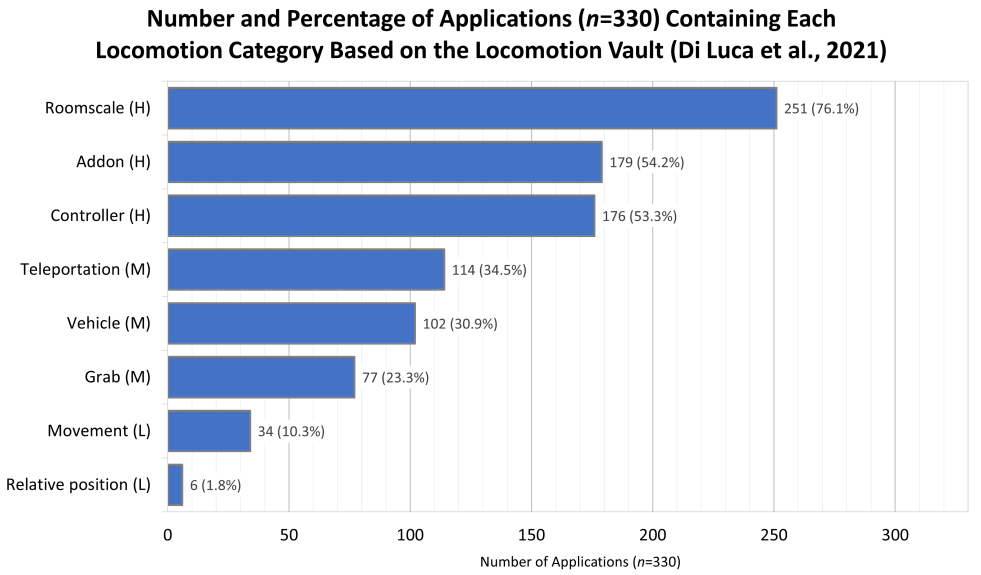
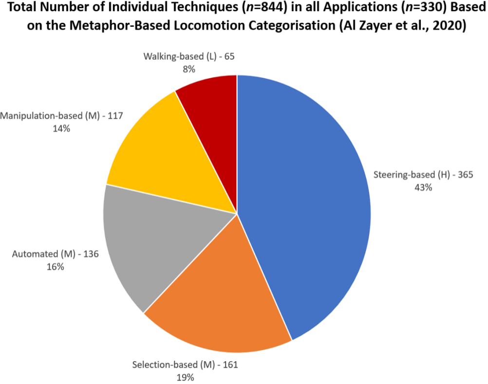
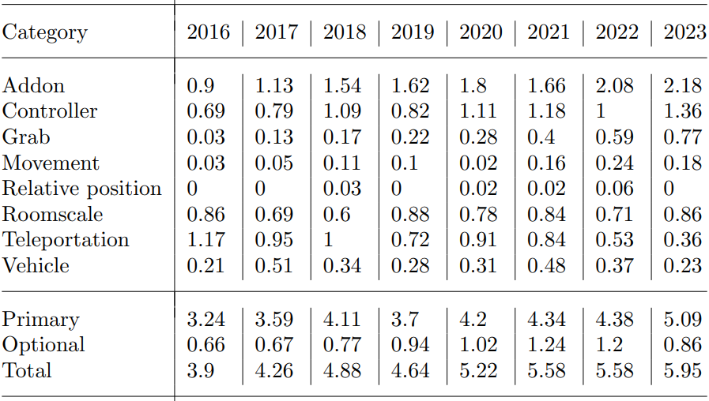

Locomotion Techniques in Commercial VR
Highlighting the trends and gaps that exist between industry and academia
Moving around in virtual reality (VR), known as locomotion, can be difficult, especially for people with disabilities or those prone to motion sickness. Researchers often study these movement methods, but they usually only look at other academic studies. To see what is actually happening in the real world, I looked at the most popular VR games and applications to see how developers are actually letting users move. I found that developers are using some methods way less than researchers thought, and are increasingly relying on movement styles that require very precise arm movements. Highlighting these real-world trends shows researchers where they need to focus next to ensure everyone can move around in VR comfortably.
Project Overview
Addressing the gap in understanding about how industry practitioners have implemented locomotion in VR, highlighting historical usage and current trends:
- Published (PDF (opens in a new tab)) in the International Journal of Human-Computer Interaction (opens in a new tab) (Q1 Best Quartiles (opens in a new tab). 3rd ranked HCI publication on Google Scholar (opens in a new tab))
- Reached 11th on the list of most read articles published within the last 12 months in the International Journal of Human-Computer Interaction
- ASSETS '23 (Core A (opens in a new tab)) workshop co-organiser (opens in a new tab), presenter, & proceeding co-author (opens in a new tab)
- Haptics for Inclusion (opens in a new tab) presenter & demonstrator

Related Work
Locomotion technique systematic reviews primarily focus on academic sources, with commercial techniques rarely subject to rigorous empirical review. Locomotion taxonomies in particular have strongly focused on academic sources, potentially resulting in unrepresentative and unsuitable taxonomies when applied to commercial application analysis.
Read Video Description
A first-person view demonstrating a teleportation locomotion mechanic in a virtual reality environment, showing a visual arc extending from the user's controller to indicate the target destination on the ground and the user teleporting twice.
Challenges around locomotion in VR are a significant barrier to use, in particular for physical, cognitive, visual, and/or auditory impaired users. Locomotion techniques relying solely on visual feedback, such as visual-only teleportation targeting, have proven particularly inaccessible for BLV individuals for example, with feedback suggesting the addition of accessible audio or haptic cues during locomotion may prove beneficial. This review both categorises how locomotion haptic feedback is currently implemented, as well as acting as a call to action for further accessibility focused VR locomotion research, both for my own future PhD studies and the wider researcher community.
Read Video Description
A first-person view of a user grabbing a wall and pulling themselves upwards to simulate climbing in a virtual environment.
The main contributions of this review are:
- The first systematic review of locomotion techniques in commercial VR applications, with technique adoption rates identifying industry practitioner exploration.
- Identification of the most common haptic cues associated with locomotion in commercial applications, highlighting the gap in the exploration of potentially accessible haptics.
- An empirical comparison of locomotion exploration between academia and industry, identifying researcher and practitioner interest overlaps and potential gaps.
Review Method
A systematic software review was conducted to assess locomotion technique adoption amongst industry practitioners. Inclusion criteria were based upon commercial application usage metrics, established through Steam, Meta, Oculus, SideQuest, and Viveport platform ranking listings and download reports. Usage metrics were selected in order to identify the locomotion techniques that are most likely to be experienced by users of consumer-level HMDs, in turn providing a representative overview of mainstream VR practices.

This data collection and subsequent systematic review aimed to explore the following key research questions to provide a clearer historical and state-of-the-art understanding of industry practitioner locomotion technique adoption:
- Which locomotion techniques are most and least explored by practitioners?
- How have industry practitioners utilised locomotion haptic cues?
- Where do academic and practitioner adoption rates align and diverge?
View Presentation Text Alternative
Slide one shows virtual swimming, slide two shows joystick movement with snap turning, slide three shows flying, slide four shows arm walking, and slide five shows joystick, climbing, and more complex interactions.
Locomotion attributes were assigned for each application based primarily upon first author testing. Subsequent web searches allowed for full categorisation of techniques not immediately available during first-hand testing, such as techniques presented later in gaming applications only after extended progression. All locomotion techniques were noted, with primary and optional techniques separately labelled within the database. Locomotion techniques were categorised following two separate locomotion taxonomies best suited for the specific research questions to be explored. The Locomotion Vault (opens in a new tab) was selected to explore RQ1 and RQ2, whilst the high-level abstraction metaphor-based taxonomy categorisation introduced by Bowman et al. (2004) (opens in a new tab) was used to explore RQ3.
Results
The most explored practitioner techniques include the earliest invented room-scale and sliding joystick techniques. Novel techniques made possible by the positional tracking of consumer-level HMDs, such as arm swinging locomotion, meanwhile appear underexplored by industry practitioners.
Although room-scale locomotion is the most widely explored technique overall, applications most often combine the room-scale technique with more conventional controller sliding locomotion rather than utilising roomscale walking-based techniques, highlighting a large industry gap.


Claims that teleportation is the standard locomotion technique in VR, whilst largely accurate in 2016 and 2017, no longer hold true, with the category as a whole continuously decreasing in use.
The continuous growth in grab technique exploration, combined with the often precise motion tracked arm movements required for inputs such as climbing, emphasises the urgency needed in further accessibility-related research to ensure locomotion is usable, flexible, and adaptable to varied needs.
Industry practitioners appear to largely not be offering alternative viewpoint motion control categories. Locomotion options consist mostly of the visual sickness mitigation snap turn and tunneling techniques, suggesting that users are largely not able to tailor locomotion to their own abilities.
Simulator sickness and motor accessibility are currently the only considerations in accessibility categorisation schemes. Research is urgently needed to further explore locomotion accessibility from alternative perspectives, such as with cognitive and sensory impaired individuals.


Conclusion
The focus on academic sources within VR locomotion research has led to a large gap in the understanding of industry practitioner adoption. These representative overview results highlight the divergent interests between industry and academia, showing for example the dramatic declining exploration of teleportation in commercial applications, from 48% of the applications released in 2016 to 18% of those released in 2023, suggesting that practitioners are less interested in teleportation than previously often assumed. Temporal analysis furthermore suggests that academically underexplored techniques, such as hand walking within the grab locomotion category, may require renewed research focus in order to potentially uncover technique specific usability insights.
The high practitioner usage levels of sickness mitigation techniques such as snap turning indicates that practitioners have widely implemented many of the best practice visual sickness findings from academic research. Sickness however is not the only accessibility barrier present in VR locomotion, with the increasing complexity of locomotion techniques in commercial applications, as shown both in the rising number of techniques in an average application, and the growing focus on precise arm movement based techniques such as climbing, emphasising the urgent need for further research to ensure locomotion is accessible for all audiences.
This review supports the needs of both academic researchers and industry practitioners, with the numerous trends and gaps identified adding scientific rigour to future VR locomotion selections across both domains. Potential key future research directions include the exploration of locomotion accessibility beyond physical effort metrics, in particular with cognitive and sensory impaired audiences. Finally, the current low exploration within mainstream applications in the extensively academically explored walking-based locomotion category suggests a potential walking-based locomotion industry market gap, whilst the growing practitioner adoption of grab techniques suggests that the grab category may require further academic research focus to uncover potential usability and accessibility insights.

Reflections
Together with the general accessibility analysis, this was my first study during my PhD, laying the groundwork for future research both for my own PhD, as well as for the wider HCI research community. Addressing a large gap in knowledge has helped to showcase my ability to contribute new knowledge to the field, in turn building my confidence in my abilities to complete my PhD.
Presenting my work exploring locomotion at the Haptics for Inclusion event in Sweden, including with interactive hands-on demo sessions to allow people to experience the locomotion and haptic techniques, has allowed me to share my findings at an early stage in my overall research and receive valuable feedback.
This survey lays the foundation for the rest of my PhD journey, building my skills at identifying and investigating research gaps, as well as presenting research results.
.webp)
Thank you for reading about my survey!
Feel free to contact me for any further questions!
Read more of my case studies

Read Video Description
First-person perspective in a commercial virtual reality game, demonstrating visual evaluations of in-game accessibility features during movement.
Read Video Description
A virtual classroom setting containing a flat-panel video of a woman performing sign language, positioned in the lower centre of the screen.